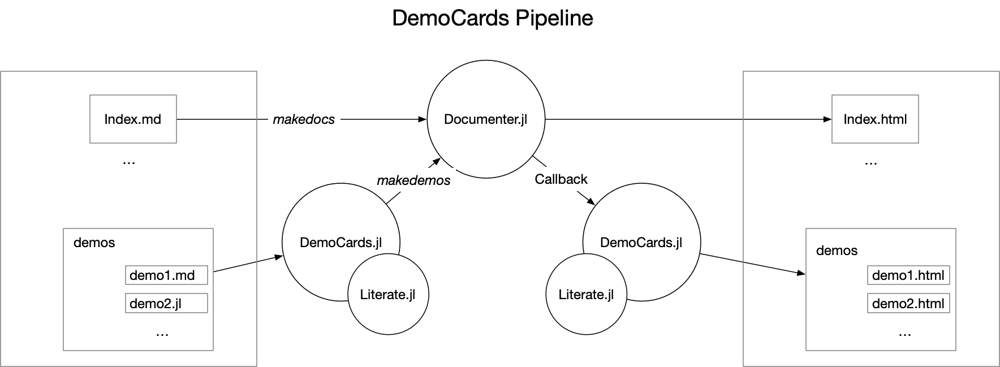

Quick Start
This section describes how you can set up your demos easily in five lines of codes.
Manage your demo files
The rules of demo management are super simple:
- you need one demo page (folder) to hold all the demo files
- a demo page has several demo sections (subfolders)
- a demo section either
- has other demo sections as nested subsections, or,
- has the demo files (
.md,.jl)
In the following example:
- we have one demo page:
"quickstart"–-> The current page you're looking at "quickstart"has one demo section:"usage example""usage example"has two demo subsections:"basics"and"julia_demos""basics"section holds all markdown demos"julia_demos"section holds all julia demos
"assets"folders are ignored byDemoCards.jl"index.md"is where all demo cards are organized in (aka page template)"config.json"are configuration files (there are many of them!)
docs/quickstart
├── config.json
├── index.md
└── usage_example
├── basics
│ ├── assets
│ ├── config.json
│ ├── configure_card.md
│ ├── configure_sec_and_page.md
│ ├── hidden_card.jl
│ ├── hide_your_card_from_index.md
│ └── simple_markdown_demo.md
├── config.json
└── julia_demos
├── 1.julia_demo.jl
├── 2.cover_on_the_fly.jl
├── assets
└── config.jsonThis is the core idea, as long as you organize your folder in a structural way, DemoCards will read and process your demos to map your folder structure.
julia> using DemoCardsjulia> cd(pkgdir(DemoCards)) do DemoCards.DemoPage("docs/quickstart") endDemoPage("docs/quickstart"): # Quick Start ## Usage example ### Basics simple_markdown_demo.md configure_card.md configure_sec_and_page.md hide_your_card_from_index.md hidden_card.jl ### Julia demos 1.julia_demo.jl 2.cover_on_the_fly.jl
Deploy your demo page

The above image is the workflow of DemoCards. The deployment would be pretty easy:
- pass your demos to
makedemos, so that they're preprocessed before passing intoDocumenter.jl - generate the entire documentation using
Documenter.makedocs - post process the generated demos using callbacks.
# 1. generate demo files
demopage, postprocess_cb, demo_assets = makedemos("demos") # this is the relative path to docs/
# if there are generated css assets, pass it to Documenter.HTML
assets = []
isnothing(demo_assets) || (push!(assets, demo_assets))
# 2. normal Documenter usage
format = Documenter.HTML(assets = assets)
makedocs(format = format,
pages = [
"Home" => "index.md",
demopage,
],
sitename = "Awesome demos")
# 3. postprocess after makedocs
postprocess_cb()In this example, there are three returned objects from makedemos:
demopage: this is the relative path to the generated demos (typically insrc), you can pass it tomakedocs'spages.postprocess_cb: this is the callback function that you'll need to call aftermakedocs.demo_assets: if available, it is the path to css file which you could pass toDocumenter.HTMLas style assets. If no theme is configured for your page, it will be `nothing.
After it's set up, you can now focus on contributing more demos and leave other works to DemoCards.jl.
🎉 The following example grids are generated using DemoCards! You can read them one by one for advanced configuration helps. Or you could read the Concepts page first to get better understanding about the DemoCards type system.
Usage example
Basics
Demos can be written in typical markdown files with Documenter syntax, the only thing DemoCards does is to analyse the folder structure of your markdown files.
This demo show you what DemoCards.jl does to a markdown demo.

This demo show you how to pass additional meta info of card to DemoCards.jl

This demo shows you how to configure your demo page and sections.

This demo shows you how to hide your card in page layout.

Julia demos
It also supports julia source codes (powered by Literate.jl). With this you can not only show typical mardown demo to readers but also provide a downloadable source code and an online notebook link. Another advantage is that you can generate demo assets on the fly(e.g., cover pages, artifacts), which is not an easy task for typical markdown demos using Documenter alone.
This demo shows you how to write your demo in julia

The page you are reading right now is the generated index page of demos. An index page always have cover images for the demos. An index page is only generated if you configure the theme option in your page config file (e.g., docs/quickstart/config.json):
{
"theme": "grid"
}There are three themes available now:
"nothing"(default): index page and associated assets will not be generated, instead, it will use the sidebar generated by Documenter.jl to navigate through pages. This is the default option when you doesn't configure"theme"."grid"and"list": an index page and associated cover images are generated
Please check the "Theme Gallery" part for a preview of these themes.
What DemoCards.jl does
The pipeline of makedemos is:
- analyze the structure of your demo folder and extracts supplementary configuration information
- copy "
assets" folder without processing - preprocess demo files and save it
- (optional) process and save cover images
- (optional) generate index page
- generate a postprocessing callback function
Since all files are generated to docs/src, the next step is to leave everything else to Documenter.jl 💯
By default, makedemos generates all the necessary files to docs/src, this means that the data you pass to makedemos should not be placed at docs/src.
For advanced usage of DemoCards.jl, you need to understand the core concepts of it.
Currently, there's no guarantee that this function works for untypical documentation folder structure. By the word typical, it is:
.
├── Project.toml
├── docs/
│ ├── demos/ # manage your demos outside docs/src
│ ├── make.jl
│ ├── Project.toml
│ └── src/
├── src/
└── test/